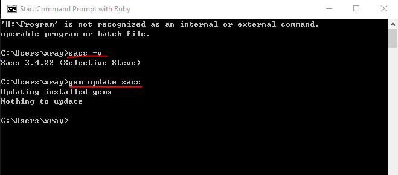
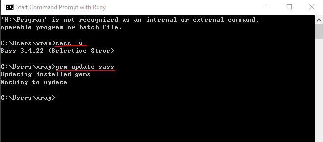
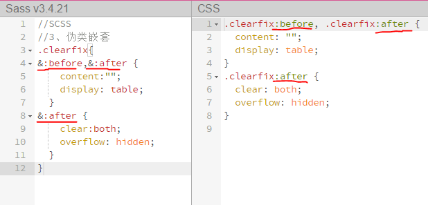
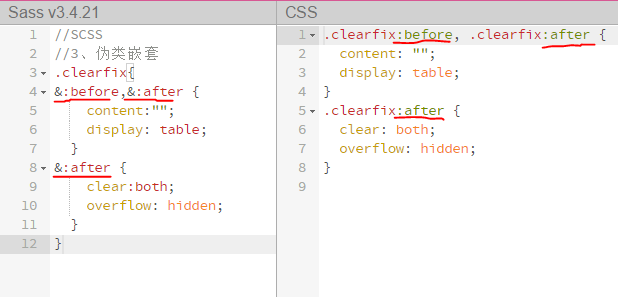
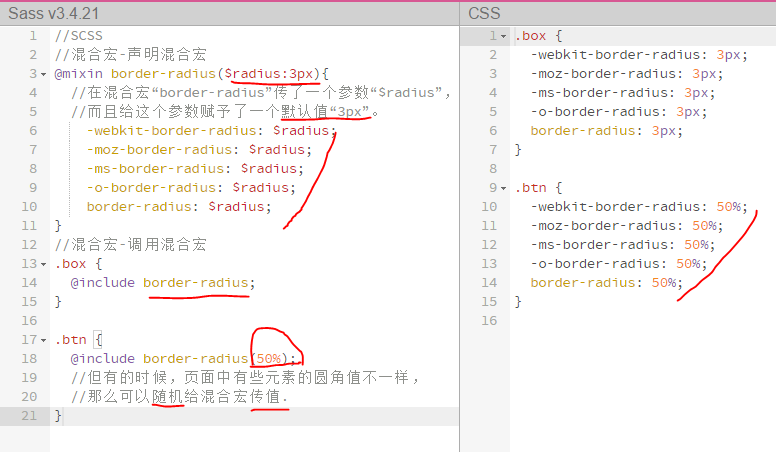
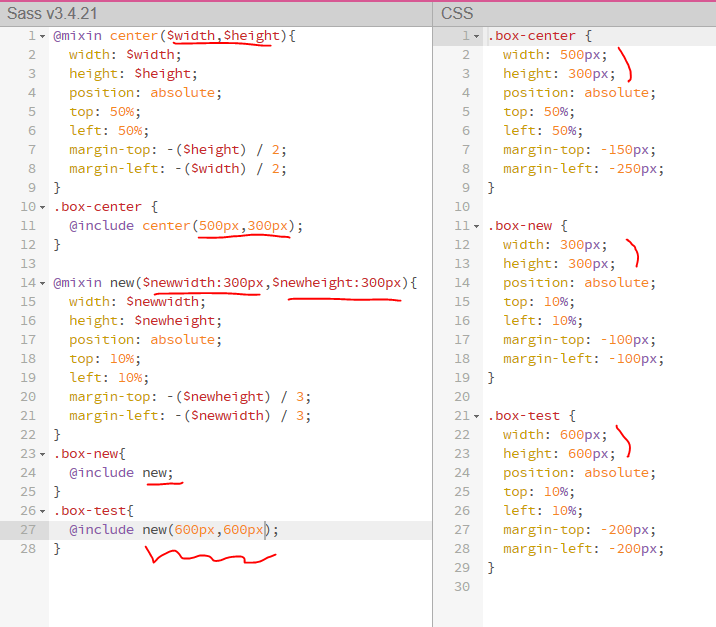
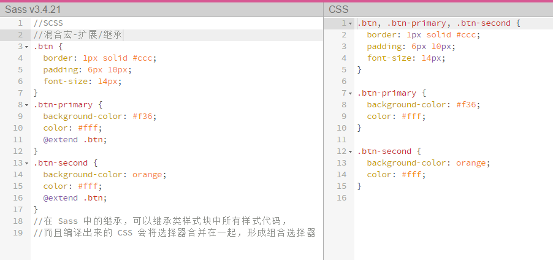
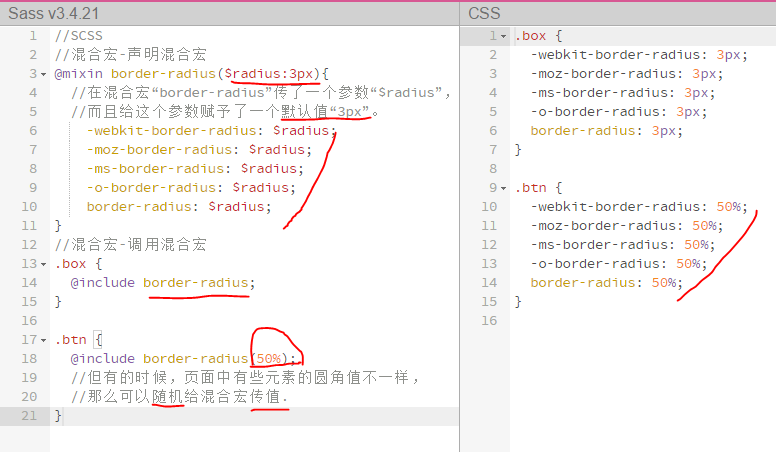
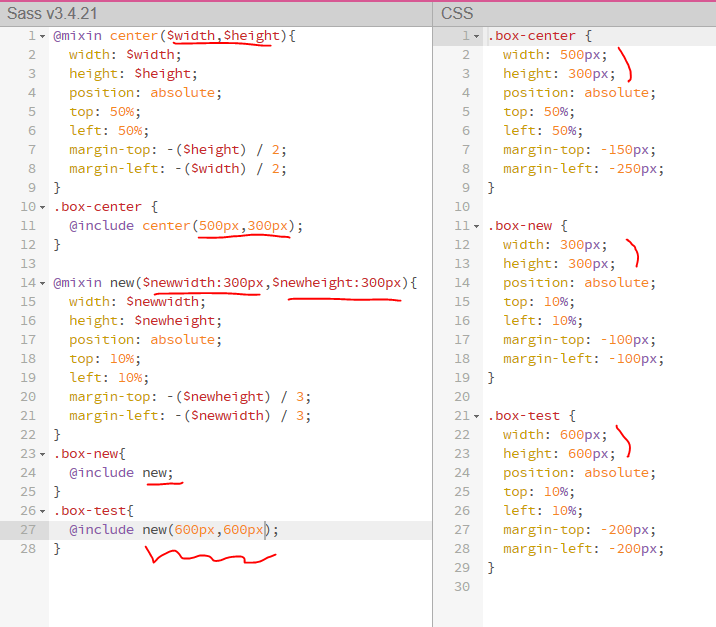
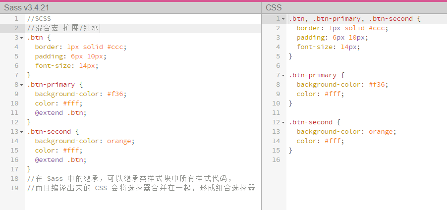

SCSS-Sass
//Welcome to tutorial.xgqfrms.xyz learning Sass
//Sass写法：
body
color: #fff
background: #f36
//而在 CSS 我们是这样书写：
body{
color:#fff;
background:#f36;
}
//而在 SCSS 也可以这样书写（有病呀！）：
body{
color:#fff;
background:#f36;
}
http://www.imooc.com/code/6389
Windows 安装 Ruby && Sass
1.安装 Ruby ; rubyinstaller-2.3.1-x64.exe
http://rubyinstaller.org/downloads
2.安装 Sass; gem install sass
 3.(options) 安装 Compass; gem install compass
Compass 是一个成熟的、基于 Sass 开发的一个框架，这里面集成了很多写好的 mixins 和 Sass 函数。
可以通过安装 compass 来安装 Sass，因为 Compass 是基于 Sass 开发的一个框架。也就是说，你安装了 Compass，也就同时安装好了 Sass。
4.查测 Sass
sass -v
5.更新 Sass
gem update sass

6.卸载（删除）Sass:
gem uninstall sass
3.(options) 安装 Compass; gem install compass
Compass 是一个成熟的、基于 Sass 开发的一个框架，这里面集成了很多写好的 mixins 和 Sass 函数。
可以通过安装 compass 来安装 Sass，因为 Compass 是基于 Sass 开发的一个框架。也就是说，你安装了 Compass，也就同时安装好了 Sass。
4.查测 Sass
sass -v
5.更新 Sass
gem update sass

6.卸载（删除）Sass:
gem uninstall sass
//坑 bug: pits/hollow/hole/entrap/tunnel
//在此特别提醒新同学：“.sass”只能使用 Sass 老语法规则（缩进规则），“.scss”使用的是 Sass 的新语法规则，也就是 SCSS 语法规则（类似 CSS 语法格式）。
在项目中还是引用“.css”文件，Sass 只不过是做为一个预处理工具.
1.Sass 的编译::
命令编译: 命令编译是指使用你电脑中的命令终端，通过输入 Sass 指令来编译 Sass。
单文件编译：(使用 sass 命令编译时，可以带很多的参数：)
sass <要编译的Sass文件路径>/style.scss:<要输出CSS文件路径>/style.css
多文件编译：
sass sass/:css/
编译 Sass 时，开启“watch”功能:(监测,自动重新编译)
sass --watch <要编译的Sass文件路径>/style.scss:<要输出CSS文件路径>/style.css
DEMO:
sass --watch sass/bootstrap.scss:css/bootstrap.css
GUI工具编译:
GUI 界面编译工具(目前较为流行的)：
Koala (http://koala-app.com/)
Compass.app（http://compass.kkbox.com/）
Scout（http://mhs.github.io/scout-app/）
CodeKit（https://incident57.com/codekit/index.html）
Prepros（https://prepros.io/）
推荐使用:
Koala (http://www.w3cplus.com/preprocessor/sass-gui-tool-koala.html)
CodeKit (http://www.w3cplus.com/preprocessor/sass-gui-tool-codekit.html)
动化编译:
Grunt 和 Gulp :
Grunt 配置 Sass 编译的示例代码:
module.exports = function(grunt) {
grunt.initConfig({
pkg: grunt.file.readJSON('package.json'),
sass: {
dist: {
files: {
'style/style.css' : 'sass/style.scss'
}
}
},
watch: {
css: {
files: '**/*.scss',
tasks: ['sass']
}
}
});
grunt.loadNpmTasks('grunt-contrib-sass');
grunt.loadNpmTasks('grunt-contrib-watch');
grunt.registerTask('default',['watch']);
}
Gulp 配置 Sass 编译的示例代码:
var gulp = require('gulp');
var sass = require('gulp-sass');
gulp.task('sass', function () {
gulp.src('./scss/*.scss')
.pipe(sass())
.pipe(gulp.dest('./css'));
});
gulp.task('watch', function() {
gulp.watch('scss/*.scss', ['sass']);
});
gulp.task('default', ['sass','watch']);
2.常见的编译错误::
而最为常见的一个错误就是字符编译引起的。在Sass的编译的过程中，是不是支持“GBK”编码的。所以在创建 Sass 文件时，就需要将文件编码设置为“utf-8”。
另外一个错误就是路径中的中文字符引起的。建议在项目中文件命名或者文件目录命名不要使用中文字符。
3.不同CSS样式风格的输出方法:
嵌套输出方式 nested:
//在编译的时候带上参数“ --style nested”:
//DEMO: sass --watch test.scss:test.css --style nested
 展开输出方式 expanded:
//(这个输出的 CSS 样式风格和 nested 类似，只是输出的CCS闭合大括号再另起一行)
//在编译的时候带上参数“ --style expanded”:
//DEMO: sass --watch test.scss:test.css --style expanded
展开输出方式 expanded:
//(这个输出的 CSS 样式风格和 nested 类似，只是输出的CCS闭合大括号再另起一行)
//在编译的时候带上参数“ --style expanded”:
//DEMO: sass --watch test.scss:test.css --style expanded
 紧凑输出方式 compact:
//(该方式适合那些喜欢单行 CSS 样式格式的朋友)
//在编译的时候带上参数“ --style compact”:
//DEMO: sass --watch test.scss:test.css --style compact
紧凑输出方式 compact:
//(该方式适合那些喜欢单行 CSS 样式格式的朋友)
//在编译的时候带上参数“ --style compact”:
//DEMO: sass --watch test.scss:test.css --style compact
 压缩输出方式 compressed:
//(压缩输出方式会去掉标准的 Sass 和 CSS 注释及空格;也就是压缩好的 CSS 代码样式风格)
//在编译的时候带上参数“ --style compressed”:
//DEMO: sass --watch test.scss:test.css --style compressed
压缩输出方式 compressed:
//(压缩输出方式会去掉标准的 Sass 和 CSS 注释及空格;也就是压缩好的 CSS 代码样式风格)
//在编译的时候带上参数“ --style compressed”:
//DEMO: sass --watch test.scss:test.css --style compressed

编译出来的CSS样式风格的选择完全是个人喜好问题，可以根据自己喜欢的风格选择参数。
一段时间之后，你实际上就不再需要写 CSS 代码了，只用写 Sass 代码。在这种情况下，你只需要设定输出格式为压缩格式，知道输出的 CSS 代码可以直接使用即可
4.Sass 的调试:
//Sass 调试一直以来都是一件头痛的事情，使用 Sass 的同学都希望能在浏览器中直接调试 Sass 文件，能找到对应的行数。值得庆幸的是，现在实现并不是一件难事，只要你的浏览器支持“sourcemap”功能即可。早一点的版本，需要在编译的时候添加“--sourcemap” 参数：
//sass --watch --scss --sourcemap style.scss:style.css
//在 Sass3.3 版本之上（我测试使用的版本是 3.4.7），不需要添加这个参数也可以：
//sass --watch style.scss:style.css
5. Sass的基本特性-基础
声明变量:
//在有些编程语言中（如，JavaScript）声明变量都是使用关键词“var”开头，但是在 Sass 不使用这个关键词，而是使用大家都喜欢的美元符号“$”开头。
 声明变量的符号“$”
变量名称
赋予变量的值
//如果值后面加上!default则表示默认值。
普通变量与默认变量:
//普通变量: 定义之后可以在全局范围内使用
//默认变量: sass 的默认变量仅需要在值后面加上 !default 即可。
//sass 的默认变量一般是用来设置默认值，然后根据需求来覆盖的，覆盖的方式也很简单，只需要在默认变量之前重新声明下变量即可。
//(默认变量的价值在进行组件化开发的时候会非常有用。)
变量的调用:
//在 Sass 中声明了变量之后，就可以在需要的地方直接调用变量。
局部变量和全局变量：
//全局变量:就是定义在元素外面的变量;
//局部变量:就是定义在元素内部的变量。
// 除此之外，Sass 现在还提供一个 !global 参数。!global 和 !default 对于定义变量都是很有帮助的。我们之后将会详细介绍这两个参数的使用以及其功能。
// 当在局部范围（选择器内、函数内、混合宏内...）声明一个已经存在于全局范围内的变量时，局部变量就成为了全局变量的影子。基本上，局部变量只会在局部范围内覆盖全局变量。
$color: orange !default;
//定义全局变量(在选择器、函数、混合宏...的外面定义的变量为全局变量)
.block {
color: $color;//调用全局变量
}
em {
$color: red;//定义局部变量（全局变量 $color 的影子）
a {
color: $color;//调用局部变量
}
}
span {
color: $color;//调用全局变量
}
嵌套-选择器嵌套:
选择器嵌套:
//选择器嵌套为样式表的作者提供了一个通过局部选择器相互嵌套实现全局选择的方法
声明变量的符号“$”
变量名称
赋予变量的值
//如果值后面加上!default则表示默认值。
普通变量与默认变量:
//普通变量: 定义之后可以在全局范围内使用
//默认变量: sass 的默认变量仅需要在值后面加上 !default 即可。
//sass 的默认变量一般是用来设置默认值，然后根据需求来覆盖的，覆盖的方式也很简单，只需要在默认变量之前重新声明下变量即可。
//(默认变量的价值在进行组件化开发的时候会非常有用。)
变量的调用:
//在 Sass 中声明了变量之后，就可以在需要的地方直接调用变量。
局部变量和全局变量：
//全局变量:就是定义在元素外面的变量;
//局部变量:就是定义在元素内部的变量。
// 除此之外，Sass 现在还提供一个 !global 参数。!global 和 !default 对于定义变量都是很有帮助的。我们之后将会详细介绍这两个参数的使用以及其功能。
// 当在局部范围（选择器内、函数内、混合宏内...）声明一个已经存在于全局范围内的变量时，局部变量就成为了全局变量的影子。基本上，局部变量只会在局部范围内覆盖全局变量。
$color: orange !default;
//定义全局变量(在选择器、函数、混合宏...的外面定义的变量为全局变量)
.block {
color: $color;//调用全局变量
}
em {
$color: red;//定义局部变量（全局变量 $color 的影子）
a {
color: $color;//调用局部变量
}
}
span {
color: $color;//调用全局变量
}
嵌套-选择器嵌套:
选择器嵌套:
//选择器嵌套为样式表的作者提供了一个通过局部选择器相互嵌套实现全局选择的方法
 属性嵌套:
//CSS 有一些属性前缀相同，只是后缀不一样，比如：border-top/border-right，与这个类似的还有 margin、padding、font 等属性。
属性嵌套:
//CSS 有一些属性前缀相同，只是后缀不一样，比如：border-top/border-right，与这个类似的还有 margin、padding、font 等属性。
 伪类嵌套:
//其实伪类嵌套和属性嵌套非常类似，只不过他需要借助`&`符号一起配合使用。

混合宏-声明混合宏:
//在 Sass 中，使用“@mixin”来声明一个混合宏。
//@mixin 是用来声明混合宏的关键词，有点类似 CSS 中的 @media、@font-face 一样。border-radius 是混合宏的名称。大括号里面是复用的样式代码。
1.不带参数混合宏：
@mixin border-radius{
-webkit-border-radius: 5px;
border-radius: 5px;
}
2.带参数混合宏：
@mixin border-radius($radius:5px){
-webkit-border-radius: $radius;
border-radius: $radius;
}
3.复杂的混合宏：
// Sass 中的混合宏还提供更为复杂的，你可以在大括号里面写上带有逻辑关系，帮助更好的做你想做的事情
@mixin box-shadow($shadow...) {
@if length($shadow) >= 1 {
@include prefixer(box-shadow, $shadow);
} @else{
$shadow:0 0 4px rgba(0,0,0,.3);
@include prefixer(box-shadow, $shadow);
}
}
//这个 box-shadow 的混合宏，带有多个参数，这个时候可以使用“ … ”来替代。简单的解释一下，当 $shadow 的参数数量值大于或等于“ 1 ”时，表示有多个阴影值，反之调用默认的参数值“ 0 0 4px rgba(0,0,0,.3) ”。
//注意：这里只是声明，并没有调用，所以右侧浏览器结果窗口是没有任何结果的。
混合宏-调用混合宏:
//在 Sass 中通过 @mixin 关键词声明了一个混合宏，那么在实际调用中，其匹配了一个关键词“@include”来调用声明好的混合宏.
伪类嵌套:
//其实伪类嵌套和属性嵌套非常类似，只不过他需要借助`&`符号一起配合使用。

混合宏-声明混合宏:
//在 Sass 中，使用“@mixin”来声明一个混合宏。
//@mixin 是用来声明混合宏的关键词，有点类似 CSS 中的 @media、@font-face 一样。border-radius 是混合宏的名称。大括号里面是复用的样式代码。
1.不带参数混合宏：
@mixin border-radius{
-webkit-border-radius: 5px;
border-radius: 5px;
}
2.带参数混合宏：
@mixin border-radius($radius:5px){
-webkit-border-radius: $radius;
border-radius: $radius;
}
3.复杂的混合宏：
// Sass 中的混合宏还提供更为复杂的，你可以在大括号里面写上带有逻辑关系，帮助更好的做你想做的事情
@mixin box-shadow($shadow...) {
@if length($shadow) >= 1 {
@include prefixer(box-shadow, $shadow);
} @else{
$shadow:0 0 4px rgba(0,0,0,.3);
@include prefixer(box-shadow, $shadow);
}
}
//这个 box-shadow 的混合宏，带有多个参数，这个时候可以使用“ … ”来替代。简单的解释一下，当 $shadow 的参数数量值大于或等于“ 1 ”时，表示有多个阴影值，反之调用默认的参数值“ 0 0 4px rgba(0,0,0,.3) ”。
//注意：这里只是声明，并没有调用，所以右侧浏览器结果窗口是没有任何结果的。
混合宏-调用混合宏:
//在 Sass 中通过 @mixin 关键词声明了一个混合宏，那么在实际调用中，其匹配了一个关键词“@include”来调用声明好的混合宏.
 混合宏的参数:
传一个不带值的参数:
//在调用的时候可以给这个混合宏传一个参数值：
混合宏的参数:
传一个不带值的参数:
//在调用的时候可以给这个混合宏传一个参数值：
 传一个带值的参数:
//在混合宏“border-radius”传了一个参数“$radius”，而且给这个参数赋予了一个默认值“3px”。

传多个参数:
//Sass 混合宏除了能传一个参数之外，还可以传多个参数

//有一个特别的参数“…”。当混合宏传的参数过多之时，可以使用参数来替代，
混合宏的参数--混合宏的不足:
//混合宏在实际编码中给我们带来很多方便之处，特别是对于复用重复代码块。但其最大的不足之处是会生成冗余的代码块。
//Sass 在调用相同的混合宏时，并不能智能的将相同的样式代码块合并在一起。这也是 Sass 的混合宏最不足之处。
扩展/继承:
//在 Sass 中也具有继承一说，也是继承类中的样式代码块。在 Sass 中是通过关键词 “@extend”来继承已存在的类样式块，从而实现代码的继承。
//在 Sass 中的继承，可以继承类样式块中所有样式代码，而且编译出来的 CSS 会将选择器合并在一起，形成组合选择器：

占位符 %placeholder:
//Sass 中的占位符 %placeholder 功能是一个很强大，很实用的一个功能，这也是我非常喜欢的功能。他可以取代以前 CSS 中的基类造成的代码冗余的情形。因为 %placeholder 声明的代码，如果不被 @extend 调用的话，不会产生任何代码。
传一个带值的参数:
//在混合宏“border-radius”传了一个参数“$radius”，而且给这个参数赋予了一个默认值“3px”。

传多个参数:
//Sass 混合宏除了能传一个参数之外，还可以传多个参数

//有一个特别的参数“…”。当混合宏传的参数过多之时，可以使用参数来替代，
混合宏的参数--混合宏的不足:
//混合宏在实际编码中给我们带来很多方便之处，特别是对于复用重复代码块。但其最大的不足之处是会生成冗余的代码块。
//Sass 在调用相同的混合宏时，并不能智能的将相同的样式代码块合并在一起。这也是 Sass 的混合宏最不足之处。
扩展/继承:
//在 Sass 中也具有继承一说，也是继承类中的样式代码块。在 Sass 中是通过关键词 “@extend”来继承已存在的类样式块，从而实现代码的继承。
//在 Sass 中的继承，可以继承类样式块中所有样式代码，而且编译出来的 CSS 会将选择器合并在一起，形成组合选择器：

占位符 %placeholder:
//Sass 中的占位符 %placeholder 功能是一个很强大，很实用的一个功能，这也是我非常喜欢的功能。他可以取代以前 CSS 中的基类造成的代码冗余的情形。因为 %placeholder 声明的代码，如果不被 @extend 调用的话，不会产生任何代码。
 混合宏 VS 继承 VS 占位符:
1.混合宏:
//总结：编译出来的 CSS 清晰告诉了大家，他不会自动合并相同的样式代码，如果在样式文件中调用同一个混合宏，会产生多个对应的样式代码，造成代码的冗余，这也是 CSSer 无法忍受的一件事情。不过他并不是一无事处，他可以传参数。
//个人建议：如果你的代码块中涉及到变量，建议使用混合宏来创建相同的代码块。
2.继承:
//总结：使用继承后，编译出来的 CSS 会将使用继承的代码块合并到一起，通过组合选择器的方式向大家展现，比如 .mt, .block, .block span, .header, .header span。这样编译出来的代码相对于混合宏来说要干净的多，也是 CSSer 期望看到。但是他不能传变量参数。
//个人建议：如果你的代码块不需要专任何变量参数，而且有一个基类已在文件中存在，那么建议使用 Sass 的继承。
3.占位符:
//总结：编译出来的 CSS 代码和使用继承基本上是相同，只是不会在代码中生成占位符 mt 的选择器。那么占位符和继承的主要区别的，“占位符是独立定义，不调用的时候是不会在 CSS 中产生任何代码；继承是首先有一个基类存在，不管调用与不调用，基类的样式都将会出现在编译出来的 CSS 代码中。”
混合宏 VS 继承 VS 占位符:
1.混合宏:
//总结：编译出来的 CSS 清晰告诉了大家，他不会自动合并相同的样式代码，如果在样式文件中调用同一个混合宏，会产生多个对应的样式代码，造成代码的冗余，这也是 CSSer 无法忍受的一件事情。不过他并不是一无事处，他可以传参数。
//个人建议：如果你的代码块中涉及到变量，建议使用混合宏来创建相同的代码块。
2.继承:
//总结：使用继承后，编译出来的 CSS 会将使用继承的代码块合并到一起，通过组合选择器的方式向大家展现，比如 .mt, .block, .block span, .header, .header span。这样编译出来的代码相对于混合宏来说要干净的多，也是 CSSer 期望看到。但是他不能传变量参数。
//个人建议：如果你的代码块不需要专任何变量参数，而且有一个基类已在文件中存在，那么建议使用 Sass 的继承。
3.占位符:
//总结：编译出来的 CSS 代码和使用继承基本上是相同，只是不会在代码中生成占位符 mt 的选择器。那么占位符和继承的主要区别的，“占位符是独立定义，不调用的时候是不会在 CSS 中产生任何代码；继承是首先有一个基类存在，不管调用与不调用，基类的样式都将会出现在编译出来的 CSS 代码中。”
 插值#{}:
//http://www.imooc.com/code/7042
//使用 CSS 预处理器语言的一个主要原因是想使用 Sass 获得一个更好的结构体系。比如说你想写更干净的、高效的和面向对象的 CSS。Sass 中的插值(Interpolation)就是重要的一部分.
//当你想设置属性值的时候你可以使用字符串插入进来。
//另一个有用的用法是构建一个选择器。
//幸运的是 Sass ，可以使用 @extend 中使用插值,因为他给了我们变量，可以动态的插入 .class 和 %placeholder
插值#{}:
//http://www.imooc.com/code/7042
//使用 CSS 预处理器语言的一个主要原因是想使用 Sass 获得一个更好的结构体系。比如说你想写更干净的、高效的和面向对象的 CSS。Sass 中的插值(Interpolation)就是重要的一部分.
//当你想设置属性值的时候你可以使用字符串插入进来。
//另一个有用的用法是构建一个选择器。
//幸运的是 Sass ，可以使用 @extend 中使用插值,因为他给了我们变量，可以动态的插入 .class 和 %placeholder
 /*
你就会想到超级酷的 mixins，用来生成代码或者生成另一个 mixins。
然而，这并不完全是可能的。
第一个限制，这可能会很删除用于 Sass 变量的插值。
*/
//所以，#{}语法并不是随处可用，你也不能在 mixin 中调用：
/*
你就会想到超级酷的 mixins，用来生成代码或者生成另一个 mixins。
然而，这并不完全是可能的。
第一个限制，这可能会很删除用于 Sass 变量的插值。
*/
//所以，#{}语法并不是随处可用，你也不能在 mixin 中调用：
 注释:
//注释对于一名程序员来说，是极其重要，良好的注释能帮助自己或者别人阅读源码。
//在 Sass 中注释有两种方式:
//1、使用 ”/* ”开头，结属使用 ”*/ ”
//2、使用“//”
//两者区别，前者会在编译出来的 CSS 显示，后者在编译出来的 CSS 中不会显示.
数据类型:
//Sass 和 JavaScript 语言类似，也具有自己的数据类型，在 Sass 中包含以下几种数据类型：
//数字: 如，1、 2、 13、 10px；
//字符串：有引号字符串或无引号字符串，如，"foo"、 'bar'、 baz；
//颜色：如，blue、 #04a3f9、 rgba(255,0,0,0.5)；
//布尔型：如，true、 false；
//空值：如，null；
//值列表：用空格或者逗号分开，如，1.5em 1em 0 2em 、 Helvetica, Arial, sans-serif。
//SassScript 也支持其他 CSS 属性值（property value），比如 Unicode 范围，或 !important 声明。然而，Sass 不会特殊对待这些属性值，一律视为无引号字符串 (unquoted strings)。
值列表:
//所谓值列表 (lists) 是指 Sass 如何处理 CSS 中：
//margin: 10px 15px 0 0 或者： font-face: Helvetica, Arial, sans-serif
//这样通过空格或者逗号分隔的一系列的值。
//事实上，独立的值也被视为值列表——只包含一个值的值列表。
Sass列表函数（Sass list functions）赋予了值列表更多功能（Sass进级会有讲解）：
//nth函数（nth function） 可以直接访问值列表中的某一项；
//join函数（join function） 可以将多个值列表连结在一起；
//append函数（append function） 可以在值列表中添加值；
//@each规则（@each rule） 则能够给值列表中的每个项目添加样式。
注释:
//注释对于一名程序员来说，是极其重要，良好的注释能帮助自己或者别人阅读源码。
//在 Sass 中注释有两种方式:
//1、使用 ”/* ”开头，结属使用 ”*/ ”
//2、使用“//”
//两者区别，前者会在编译出来的 CSS 显示，后者在编译出来的 CSS 中不会显示.
数据类型:
//Sass 和 JavaScript 语言类似，也具有自己的数据类型，在 Sass 中包含以下几种数据类型：
//数字: 如，1、 2、 13、 10px；
//字符串：有引号字符串或无引号字符串，如，"foo"、 'bar'、 baz；
//颜色：如，blue、 #04a3f9、 rgba(255,0,0,0.5)；
//布尔型：如，true、 false；
//空值：如，null；
//值列表：用空格或者逗号分开，如，1.5em 1em 0 2em 、 Helvetica, Arial, sans-serif。
//SassScript 也支持其他 CSS 属性值（property value），比如 Unicode 范围，或 !important 声明。然而，Sass 不会特殊对待这些属性值，一律视为无引号字符串 (unquoted strings)。
值列表:
//所谓值列表 (lists) 是指 Sass 如何处理 CSS 中：
//margin: 10px 15px 0 0 或者： font-face: Helvetica, Arial, sans-serif
//这样通过空格或者逗号分隔的一系列的值。
//事实上，独立的值也被视为值列表——只包含一个值的值列表。
Sass列表函数（Sass list functions）赋予了值列表更多功能（Sass进级会有讲解）：
//nth函数（nth function） 可以直接访问值列表中的某一项；
//join函数（join function） 可以将多个值列表连结在一起；
//append函数（append function） 可以在值列表中添加值；
//@each规则（@each rule） 则能够给值列表中的每个项目添加样式。
http://www.sassmeister.com/
//SCSS
//插值#{}
$properties: (margin, padding);
@mixin set-value($side, $value) {
@each $prop in $properties {
#{$prop}-#{$side}: $value;
}
}
.login-box {
@include set-value(top, 14px);
}
@mixin generate-sizes($class, $small, $medium, $big) {
.#{$class}-small { font-size: $small; }
.#{$class}-medium { font-size: $medium; }
.#{$class}-big { font-size: $big; }
}
@include generate-sizes("header-text", 12px, 20px, 40px);
/*
在编译 CSS 文件时不会改变其类型。
只有一种情况例外，使用 # { }插值语句 (interpolation) 时，
有引号字符串将被编译为无引号字符串，
这样方便了在混合指令 (mixin) 中引用选择器名。
*/
@mixin firefox-message($selector) {
body.firefox #{$selector}:before {
content: "Hi, Firefox users!";
}
}
@include firefox-message(".header");